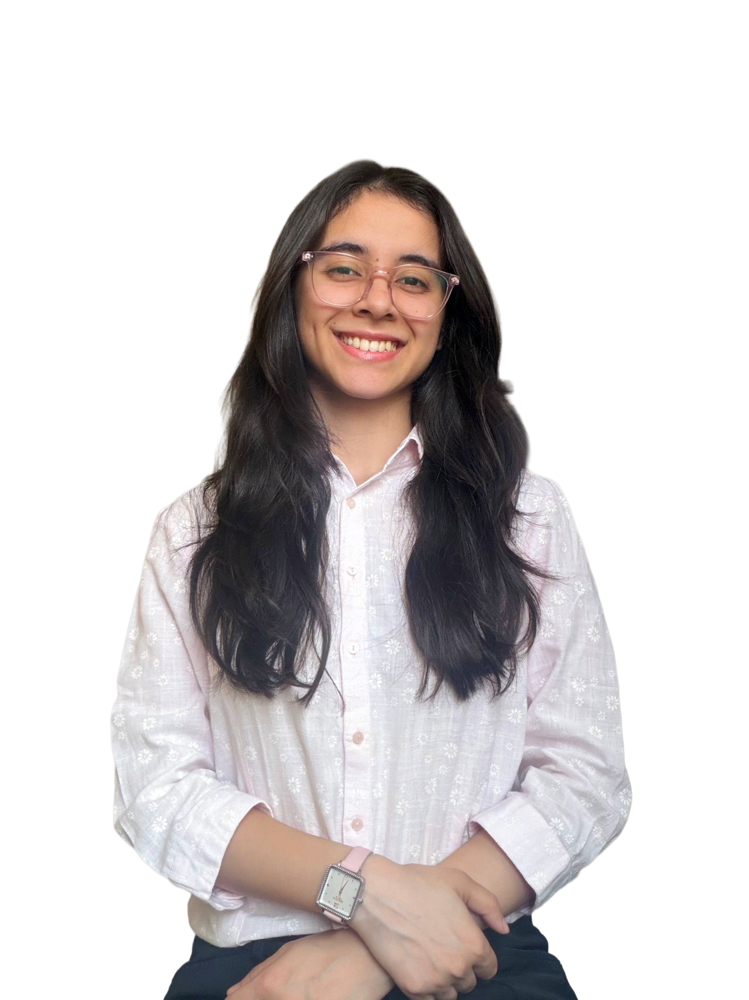
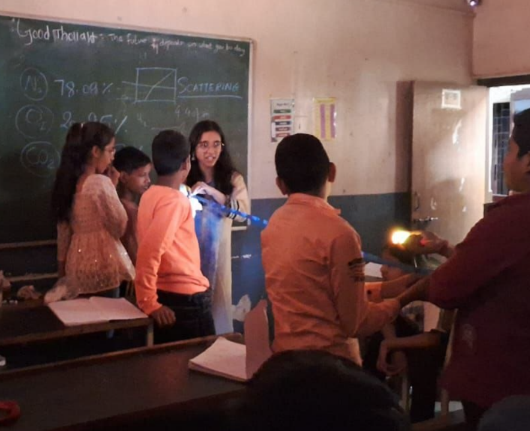
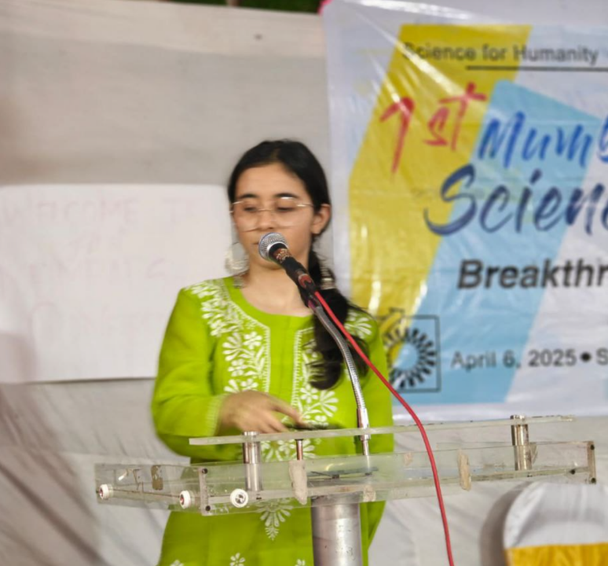
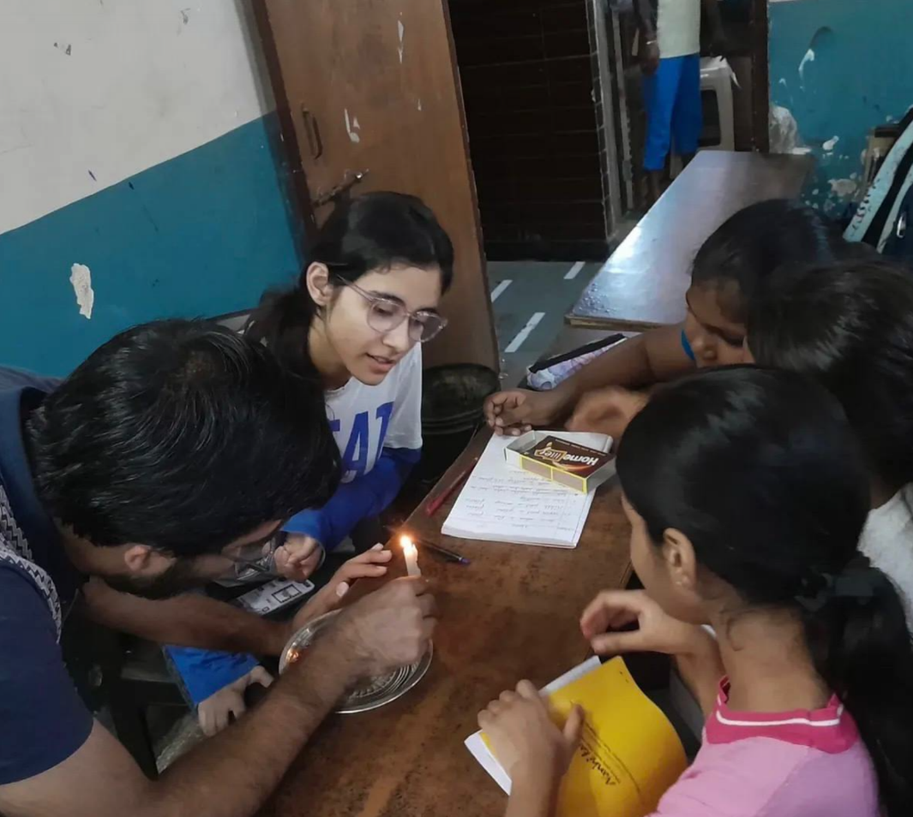

BS-MS Student | Astrophysics and Cosmology Enthusiast
I am a third-year BS-MS student at the UM-DAE Centre for Excellence in Basic Sciences (CEBS), Mumbai, with a strong interest in cosmology and astrophysics. My primary interests lie in the use of cosmological probes, particularly the cosmic microwave background and Type Ia supernovae, to understand the large-scale structure and evolution of the Universe. I am also developing an interest in gravitational lensing and related spacetime phenomena, as well as stellar evolution. I am particularly drawn to questions in precision cosmology, including the study of cosmic acceleration and current observational tensions. I am an active member of the Breakthrough Science Society, Mumbai chapter, where I engage in science outreach, and I serve as the coordinator of the Cinematography Club at my institute.

Ongoing reading project under Dr. Bhooshan Paradkar.
Simulation-based project (2025) using the CLASS code, focusing on the CMB and the cosmic energy budget.
View ReportSimulation-based project (2024) using MATLAB, focused on Brownian motion and the study of Langevin equations.
Documentary exploring how the research demands of astronomy have driven technologies used in everyday life, through insights from leading researchers.
Email: dhriti.kotwal@cbs.ac.in
Contact: +91 94192-12387
Current Address: Takshashila, UM-DAE CEBS, Mumbai, Maharashtra 400098, India
Social Work & Extracurricular Roles
Active Member — Breakthrough Science Society, Mumbai Chapter
February 2025 – Present
We teach young students in Dharavi, Mumbai and engage in activities aimed at promoting scientific temper and curiosity among school students.



Coordinator — Cultural Affairs
January 2026 – Present
Responsible for organizing cultural activities and coordinating student participation in campus events and festivals.Coordinator — Cinematography Club
February 2024 – Present
Roles: cinematographer, director, actor and editor. Our team has produced several short films: